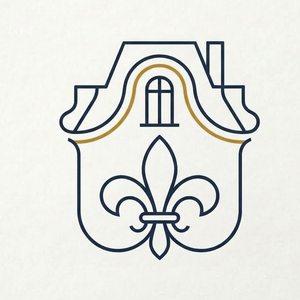
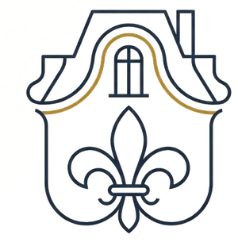
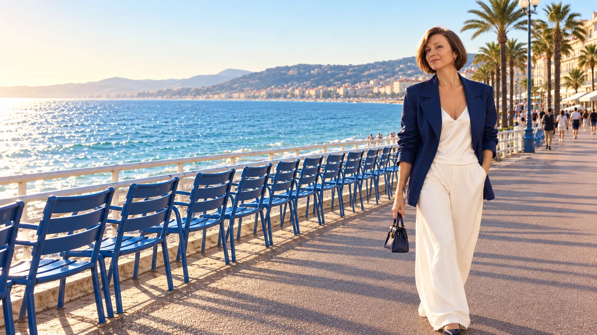

ЕленаВернодон




У каждого свой Париж
Ваш мост во Францию
Сопровождение сделок по недвижимости на русском языке
Лазурный берег · Анжу · вся Франция
Елена Вернодон
уполномоченный представитель французского агентства недвижимости
FIJ Immobilier
- зарегистрирована в торгово-промышленной палате Франции